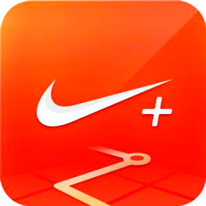

Aplicaciones infaltables
Las aplicaciones que no le pueden faltar en el celular
Hoy todo el mundo habla de aplicaciones, así nadie entienda como funcionan, está claro que son un mal necesario. Estas son las 5 apps más usadas por los hombres, y si le falta alguna, pruébela.
Deezer o Spotify
Está claro que los hombres prefieren tener a la mano la música que les gusta a cada uno y no tener que escuchar la de los demás, es fácil de utilizar y tienen todo tipo de géneros que pueden volver su vida más fácil. Descargue una de estas aplicaciones, conéctese los audífonos y piérdase del mundo exterior por un rato.
Uber
Los chicos play les aburre andar en taxi, en el amarillito tradicional, en especial si salen de una mega reunión con los mil ingenieros. El Uber es más cómodo y es para muchos, más seguro. Algunos hombres prefieren pasar un momento agradable de la casa al trabajo, y no exponerse al manoseo y restriegue de los buses.
Nike Running
Para los amantes de trotar, esta aplicación no puede faltar en la memoria de su actividad diaria. Y como para chicanear a los hombres les sobra tiempo, no falta aquel que agrega a todo su grupo de amigos para que vean cómo está su rendimiento físico. Bueno, aunque cabe resaltar que es impresionante; marca los segundos, el recorrido, los cambios y las mejoras del día a día. Figuró salir a trotar.
ESPN ScoreCenter
Si usted es un deportista frustrado, esta app le da la mejor y la más completa información, lo mantiene actualizado así no sepa nada del tema; podría conquistar a más de una mujer hablando seguro de lo que pasó el partido del día anterior y quién jugará al día siguiente, pues a un clic podrá saber los marcadores, tablas de posiciones, noticias y toda la actualidad del deporte mundial.
Estas son las aplicaciones más usadas por los hombres y por muchas mujeres, pero en especial los machos alfa llenan más de aplicaciones de tecnología y comunicación sus celulares que de edición de fotos. Si le faltó alguna, es hora de probar; si las tiene todas, felicitaciones, está a la vanguardia de la tecnología y maneja el mundo con facilidad.
Si de casualidad tiene instagram, no dude en ingresar a @RevistaBoga deleitarse con las mujeres que visitan la revista y con los artículos que tenemos especialmente para usted.